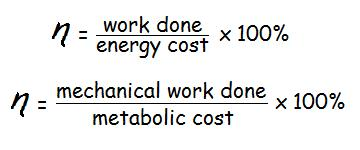
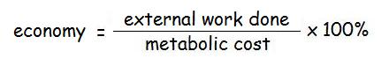
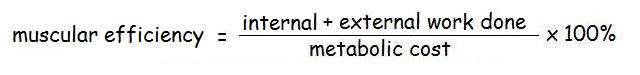

Efficiency and Economy of Human Motion

Mechanical efficiency can be defined as the ratio of work done to the cost of doing that work. In previous lectures ( work and power ) we have examined how mechanical work can be calculated during human movement. In this lecture, we will take those measures a step further. The cost of doing work in human motion involves utilizing stored energy (fat, glycogen, etc.) by burning calories and consuming oxygen. This is commonly referred to as the "metabolic cost" or "O2 cost".
Measuring Metabolic Cost:
Physiologists have long since been able to measure the metabolic cost of human activity by measuring the amount of oxygen consumed and converting that to Joules of energy. The procedure involves using a mouthpiece to collect the inspired and expired breaths of the person during an activity. By comparing the two, the amount of oxygen consumed can be determined. One liter of O2 consumed is equal to 4.83 kilocalories assuming a respiratory quotient of 0.82 which indicates a mixed diet. Each kcal of energy = 4.1868 kJ of energy.
Example: Find the rate of metabolic cost for a 60 kg cyclist pedalling at 75% of his VO2max of 65 ml/min/kg.
75% of VO2 = 0.75(65)(60)/60 ml/s = 48.75 ml/s or 0.04875 liters per second of O2.
since each liter of O2 = 4.83 kcal, consumed power = 0.04875(4.83) = 0.2355 kcal/s
since each kcal = 4.1868 kJ, consumed power = 0.2355(4186.8) = 986 J/s or 986 W
If the cyclist was performing on an exercise bike set at 246 W, his efficiency would be 246/986 x 100% = 25% efficiency. Efficiency can be measured either as the ratio of work done to cost or by rate of work done to the rate of energy consumed.
Economy of Human Motion
The above calculation is fine but the cyclist could also be doing work that was not directed to the pedals of the bike. We have seen in previous lectures that energy can be transferred passively between joints and actively by muscular contractions. The human body has many degrees of freedom and infinit ways to perform a task. Therefore, not all performances that achieve the same amount of external work will have same amount of internal work done. We have seen that a pendulum is an example of conservation of energy and the human leg segment during the swing phase of walking can act like a pendulum. However, the same swing could be achieved using knee extensor muscles acting concentrically to move the limb forward and flexors acting eccentrically to stop the swing. In the first situation, less internal work is required than in the second yet the same external work was done. External work is easily calculated by exercise bikes or weights being lifted or the potential energy gained walking on an inclined treadmill, etc. When the internal work is not calculated, it has been argued that efficiency is not the best term to use but since in many human activities, only the external work or power is important, it is a very useful measure to have. As a result, the term "economy" has been adopted as the ratio of external work done to metabolic cost.

Lets examine the case of two runners with the same mass running at increasing speeds while their oxygen consumptions are being measured.

First, notice that the rate of oxygen consumption increases linearly with the running speed for both runners. We can see that the runner B consumes less oxygen than runner A at each running speed. This means that runner B has greater running economy than A. However, runner A has a greater VO2max and when running at her maximum, has a slightly faster running speed than when B is running at her maximum. Since the objective of endurance running events is to maintain the highest average speed, the physiologist can advise runner B that she can increase her pace by increasing her aerobic fitness (VO2 max). Runner A, however already has a very high aerobic fitness but poor running economy which means that there is something about the way she runs that consumes energy that is inefficient and does not show up as external work and running speed. The source of the inefficiency is internal and can only be revealed by a biomechanical analysis and a measure of muscular efficiency.
Human Muscular Efficiency
Biomechanists use linked segment mechanics to calculate the energy or power of each segment throughout a movement to a calculation of the total work done. This total work can be considered to the the internal and external work done and we call the ratio of this work done to cost as "muscular efficiency".

The total work calculated as the sums of segment energy changes is a relatively easy calculation made from displacement and velocity measurements from video analysis and was reviewed in the work lecture. It was pointed out that the method correctly accounted for energy transfers within segments but it also allowed some incorrect transfers between segments.
A better method is to total the positive and negative muscle work done using the segmental power calculation reviewed in the power lecture. This method required a full kinetic analysis to yield joint reaction forces and net joint moments but allowed no illegal transfers of energy between segments and quantified positive and negative work. In human muscular contractions, eccentric contractions performing negative work require less metabolic cost than concentric contractions. It was also pointed out in that lecture that the work of antagonist co-contractions and passive structures could not be separated from the muscle power.
If we were to use an EMG driven model to estimate individual muscle forces and passive moments, we could get a better estimate of muscular efficiency. However, even that method would not account for metabolic cost of an isometric contraction or the energy saving of utilizing elastic energy stored in rebound movements.
Summary:
Measurement of muscular work requires a full kinetic analysis and even with the addition of EMG may not yield an accurate estimate of the total muscular work. Economy is a very useful quantity and more easily measured. If a performance is deemed to have poor economy, the biomechanical causes may be difficult to identify if there is antagonist co-contraction, isometric work, and stored elastic energy.